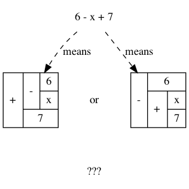
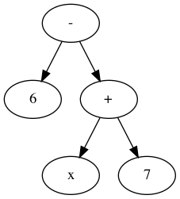
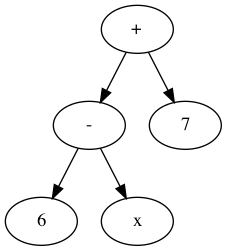

Mathematics for Computing
Abridged Lecture Notes
Based on “A Logical Approach to Discrete Math”
Table of Contents
- 1. Introduction to Calculational Reasoning
- 2. Expressions
- 3. Logics
- 4. Propositional Calculus
- 5. Program Correctness
- 6. Induction
- 7. Number Theory
Keywords
Theorem
Calculus
Propositional Calculus
Axiomatic Semantics
Operational Semantics
Associative
Identity
Identity
Metatheorem
Programming
Specification
Expression
Algorithmic Problem Solving
Calculational Proof
…I'll add more in time…
\[\newcommand\exp[1]{\mathsf{exp}_{#1}\,} % % for calc environment % line breaks with extra whitespace using phantom formula % \hdashline \def\NL{\\ \phantom{Σ} \\} \def\NLtwo{\\ \phantom{\substack{Σ \\ Σ}} \\} \]
1 Introduction to Calculational Reasoning
1.1 What are Calculational Proofs
We advocate calculational proofs in which reasoning is goal directed and justified by simple axiomatic laws that can be checked syntactically rather than semantically. ---Program Construction by Roland Backhouse
For example, below are two arguments showing that \(\sqrt[n]{k}\) is a rational number precisely when integer \(k\) is a so-called perfect n-th root —consequently, since 2 is not a perfect square, \(\sqrt{2}\) is not rational.
Conventional Proof: Non-perfect powers have irrational roots
Suppose that integer \(k\) is not a perfect n-th power —i.e., not of the form 𝓍ⁿ— then there is some prime \(p\) in the factorisation of \(k\) that has its exponent, say \(\exp{p} k\), being not a multiple of \(n\). But if \(\sqrt[n]{k} \eq a/b\) then \(\exp{p}{k} \eq \exp{p}{a^n} - \exp{p}{b ^ n} \eq n · \exp{p}{a} - n · \exp{p}{b}\) and the difference of multiples of \(n\) is a multiple of \(n\), and so we have a contradiction. Hence, no such \(a, b\) could exist and so \(\sqrt[n]{k}\) is irrational.
This is an example of an informal proof, which is a mixture of natural language, English, and mathematical calculations. The English text outline the main steps of the proof, and the mathematical calculations fill in some of the details.
Since they only communicate the key ideas, such proofs are preferred by writers but they place a large semantic burden on readers who are expected to have such a good understanding of the problem domain that the details of the outline proofs can be filled in, and so the writer leaves these as an implicit exercise to the reader.
However, even worse, such informal outline proofs may skip over important details and thus can be wrong!
Below is a calculational proof. It introduces notation and recalls theorems as needed, thereby making each step of the argument easy to verify and follow. As such, the following argument is more accessible to readers unfamiliar with the problem domain.
Calculational Proof
\begin{calc} \def\BEGINstep{\left[} \def\ENDstep{\right.} \sqrt[n]{k} \text{ is a rational number } \stepfour{ A rational number is the fraction of two integers.}{ Let variables $a,\, b$ range over integer numbers.}{}{ } ∃\, a, b •\; \sqrt[n]{k} = {a \over b} \step{ Use arithmetic to eliminate the $n$-th root operator. } ∃\, a, b •\; k · a ^n = b ^n \stepmany{ \line{Let $\exp{m} x$ be the number of times that $m$ divides $x$.} \line{For example, $\exp{2} 48 \eq 4$ and $\exp{2} 49 \eq 0$.} \NL \line{The numbers $p$ with $∀ m : ℤ⁺ \,•\, \exp{m}p \,≠\, 0 \,≡\, m \,=\, p$ are called $prime$ numbers.} \line{Let variable $p$ ranges over prime numbers. } \NL \line{Fundamental theorem of arithmetic: Numbers are determined by their prime powers.} \line{That is, $\big(∀ \,p\, •\; \exp{p} x \eq f(p)\big) \;≡\; x \,=\, \big(Π\, p\, •\; p^{f(p)}\big)$ for any $f$.} \line{As such, every number is the product of its prime powers:} \line{$\qquad x \eq \big(Π \,p\, •\; p^{\exp{p} x}\big)$. } \line{And so, any two numbers are the same precisely when they have the same primes:} \line{$\qquad x \eq y \;≡\; \big(∀ p \,•\, \exp{p} x \eq \exp{p} y\big)$.} } ∃\, a, b •\; ∀\, p •\; \exp{p}(k · a ^n) \eq \exp{p}(b ^n ) \stepmany{\line{When $p$ is prime, $\exp{p}(x · y) \eq \exp{p} x \,+\, \exp{p} y$.} \line{Aside: In general, $\exp{p}(Π \,i\, \,•\, x_i) \eq (Σ \,i\, \,•\, \exp{p} x_i)$.} } ∃\, a, b •\; ∀\, p •\; \exp{p} k + n · \exp{p} a \eq n · \exp{p} b \step{ Use arithmetic to collect similar terms. } ∃\, a, b •\; ∀\, p •\; \exp{p} k \eq n · \Big(\exp{p} b - \exp{p} a\Big) \stepmany{ \line{(⇒) is the definition of multiplicity;} \line{(⇐) take $a \,≔\, 1$ and define $b$ by its prime powers:} \line{ $\qquad ∀\, p \,•\, \exp{p} b \,≔\, {\exp{p} k \,/\, n}$} } ∀\, p •\; \exp{p} k \text{ is a multiple of } n \step{ Fundamental theorem of arithmetic and definition of ‘perfect’ } k \text{ is a perfect $n$-th power; i.e., of the shape } x^n \end{calc}
Observe that the calculational form is more general. The use of a formal approach let us keep track of when our statements are equivalent (“=”) rather than being weakened (“⇒”). That is, the use of English to express the connection between steps is usually presented naturally using “if this, then that” statements —i.e., implication— rather than stronger notion of equality.
- In contrast, the conventional proof is a ‘proof by contradiction’; a method that is over-used.
Other features of conventional proofs are the dot dot dot notations, “⋯”, to indicate “and so on, of the same idea/form” —leaving readers the burden to guess the generic shape of the ‘idea/form’ that should be repeated.
Calculational proofs use quantifiers —and loops— instead.
- Finally, conventional proofs tend to use prefix notation and thereby implicitly forcing a syntactic distinction between equivalent expressions; e.g., \(\gcd(m, \gcd(n, p))\) and \(\gcd(\gcd(m, n), p)\).
The above proof is a generalisation of a proof in Backhouse's text for square roots, which may be viewed as a Youtube video which makes use of CalcCheck ⇭: A proof checker for the logic of “A Logical Approach to Discrete Math” (‘LADM’).
- It checks your arguments in a notation similar to that of the book.
- You can check your work before handing it in.
- You can formalise your own theorems from other books and check them —unlimited exercises!
Control + Alt + Enter to check a cell.
Going forward, instead of defining expressions by how they are evaluated, we define expressions in terms of how they can be manipulated.
A calculus is a method or process of reasoning by calculation with symbols. A Boolean variable that can denote a proposition is sometimes called a propositional variable. A propositional calculus is so named beacuse it is a method of calculating with expressions that involve propositional variables.
The propositional calculus of LADM is called “equational logic 𝑬”
One part of 𝑬 is a set of axioms, which are certain Boolean expressions that define basic manipulative properties of Boolean operators. For example, the axiom \(p ∨ q ≡ q ∨ p\) indicates (semantically) that the value of a disjunction doesn't depend on the order of its arguments and (syntactically) we may swap their order when manipulating expressions. The other part of this calculus are the 3 inference rules Substitution, Leibniz, and Transitivity.A theorem of this calculus is either an axiom, the conclusion of an inference rule whose premises are theorems, or a Boolean expression that, using the inference rules, is proved equal to an axiom or a previously proved theorem.
Algorithmic Problem Solving ---“math is programming”
Problems may be formulated and solved using, possibly implicitly, the construction of correct programs:| “for all \(x\) satisfying \(R(x)\), there is a \(y\) such that \(G(x, y)\) is true” | |
| ≈ | ∀ x • R x ⇒ ∃ y • G x y |
| ≈ | R ⇒[C] G for some program command C with inputs x and outputs y |
This is known as a constructive proof since we have an algorithm C that actually
shows how to find a particular \(y\) to solve the problem, for any given \(x\). In
contrast, non-constructive proofs usually involving some form of counting
followed by a phrase “there is at least one such \(y\) …”, without actually
indicating how to find it!
More concretely,
| Any two consectuive Fibonnaci numbers are coprime | |
| ≈ | ∀ n • n ≥ 1 ⇒ gcd(fib n, fib (n + 1)) = 1 |
| ≈ | a = fib n ∧ b = fib (n + 1) ∧ n ≥ 0 |
⇒[C] |
|
a = b = gcd(fib n, fib (n + 1)) = 1, for a program C |
1.2 What is Discrete Mathematics
Discrete Mathematics includes logic (calculational reasoning), (data) sets, functions, relations, graphs, inductive types, and more.
Conscious and fluent use of the language of (discrete) mathematics is the foundation for precise specification and rigorous reasoning in Computer Science and Software Engineering
- Goal: Understand the mechanics of mathematical expressions and proof.
Propositional: Statements that can be either true or false; not numbers.
Predicate: Propositional statement about some subjects.
Calculus: Formalised reasoning through calculation.
‘Hand wavy’ English arguments tend to favour case analysis —considering what could happen in each possible scenario— which increases exponentially with each variable; in contrast, equality-based calculation is much simpler since it delegates intricate case analysis into codifed algebraic laws.
E.g., Portia's Suitor's Dilemma has 4 unknowns, each being either true or false, and so has \(2^4\) many possible scenarios to consider. Whereas a calculation solving the problem can be formed in less than 10 super simple lines.
Portia 's Suitor 's Dilemma
Portia has a gold casket and a silver casket and has placed a picture of herself
in one of them. On the caskets, she has written the following inscriptions:
- Gold
- The portrait is not in here
- Silver
- Exactly one of these inscriptions is true.
Portia explains to her suitor that each inscription may be true or false, but that she has placed her portrait in one of the caskets in a manner that is consistent with the truth or falsity of the inscriptions.
If the suitor can choose the casket with her portrait, she will marry him.
( This is a ‘teaser’; you're not expected to know the details in the following calculation. )
Formalisation is the first step towards solution!
Declaration: G, S : 𝔹 Explanation: G ≔ “The inscription on the gold casket is true” Explanation: S ≔ “The inscription on the silver casket is true”
… and
Declaration: gc : 𝔹 Explanation: gc ≔ “The portrait is in the gold casket”
… we know the portrait is in a casket preciely when that casket's inscription is true …
Axiom “Inscription on gold casket”: G ≡ ¬ gc Axiom “Inscription on silver casket”: S ≡ (S ≡ ¬ G)
… let us start from what we know about the silver casket:
Calculation:
S ≡ (S ≡ ¬ G) — This is “Inscription on silver casket”
≡⟨ “Reflexivity of ≡” ⟩
S ≡ S ≡ ¬ G
≡⟨ “Symmetry of ≡” ⟩
¬ G
≡⟨ “Inscription on gold casket” ⟩
¬ ¬ gc
≡⟨ “Double negation” ⟩
gc
By just simplifying, we calculated that the portrait is in the gold casket!
Knowledge is software for your brain: The more you know, the more problems you can solve!
1.3 Road-map
In the previous section, we showed how a calculational argument is more structured and may be more accessible. Before getting to using such a style, we first pause to discuss the foundations that legitimatise it as a tool of reasoning.
In general, proofs are evidence of truth of a claim; by demonstrating that the claim follows from some obvious truth using rules of reasoning that obviously preserve truth. Here are some examples of clearly obviously true things.
| Axiom | “self-evident (obvious) truth” |
|---|---|
| Reflexivity | \(X = X\) —Everything is the same as itself |
| Symmetry | \(X = Y\) precisely when \(Y = X\) —Sameness is mutual |
| Infernece Rule | “a reasonable way to derive truths” |
|---|---|
| Substitution | If \(E(\vec x)\) is true, then so is \(E(\vec F)\) —where \(E(\vec R)\) means \(E[\vec x ≔ \vec R]\) |
| E.g., Since \(x + y = y + 3\) is true, so is \(b + 3 = 3 + b\) —using \(x, y ≔ b, 3\) | |
| Transitivity | If \(X = Y\) and \(Y = Z\) then \(X = Z\) |
| E.g., since \(e^{i · π} = -1\) and \(-1 = i²\), we must have \(e^{i · π} = i²\). | |
| Leibniz | If \(X = Y\) then \(E(X) = E(Y)\) —“substituting equals for equals” |
| E.g., since \(n = 2 · m\) we must have \(\even n = \even (2 · m)\) | |
| E.g., if Jim = James then Jim's home address = James' home address. | |
Uses of inference rules ---for Logic 𝑬
| Inference Rule | Usage |
|---|---|
| Leibniz | We can apply equalities inside expressions |
| Transitivity of = | We can chain equalities |
| Substitution | We can use substitution instances of theorems |
| Equipollence | Things equal to theorems are also theorems |
Equipollence means if we show something is equal to ‘true’ (a particular theorem), then it is a theorem. Consequently, this means all theorems are equivalent.
That's a lot of hand-waving; and a few examples don't scale. In order to discuss proof, we need to discuss inference rules, which are ways to derive new claims from old claims, and so we need to discuss how claims —expressions or formulae— are written. So let's start at expressions.
Super terse definition ---to be explained in subsequent sections
A logic is a set of symbols along with a set of formulas formed from the symbols, and a set of infernece rules which allow formulas to be derived from other formulas. (The formulas may or may not include a notion of variable.) Logics are purely syntactic objects.
2 Expressions
2.1 Precedence
How do you ‘read’ (parse) the expression \(6 - x + 7\)?

It can be generated from its parts in two different ways:
Both \(6\) and \(x + 7\) are expressions, so \(6 - x + 7\) is an expression.

- and also both \(6 - x\) and \(7\) are expressions, so \(6 - x + 7\) is an expression.

A convention on how a string should be parsed as a tree is known as a precedence rule.
2.2 Grammars
Expressions are defined by the following grammar, but in practice one does not write \(+(1, 2)\) and instead writes \(1 + 2\). However, the phrase \(+(1, ·(2, 3))\) is unambiguous, whereas the phrase \(1 + 2 · 3\) could be read as \((1 + 2) · 3\) or as \(1 + (2 · 3)\).
The grammar defines expressions as abstract syntax (trees) whereas strings with mixfix notation gives a concrete syntax where ambiguity is resolved by parentheses, precedence, or association rules.
Expr ::= Constant -- E.g., 1 or “apple”
| Variable -- E.g., x or apple (no quotes!)
| Application -- E.g., f(x₁, x₂, …, xₙ)
( One reads := as becomes and so the addition of an extra
colon results in a ‘stutter’: One reads
::= as be-becomes. The symbol | is read or. )
2.3 Textual Substitution —i.e., “grafting trees”
The (simultaneous textual) Substitution operation \(E[\vec x ≔ \vec F]\) replaces all variables \(\vec x\) with parenthesised expressions \(\vec F\) in an expression \(E\). In particular, \(E[x ≔ F]\) is just \(E\) but with all occurrences of \(x\) replaced by \(“(F)”\). This is the “find-and-replace” utility you use on your computers.
Since expressions are either variables of functions applications, substitution can be defined by the following two clauses —we will get to recursion and induction more formally later on.
\begin{align*} y[x ≔ F] &= \mathsf{if}\, x = y \,\mathsf{then}\, F \,\mathsf{else}\, y \,\mathsf{fi}\, \\ f(t₁, …, tₙ)[x ≔ F] &= f(t₁′, …, tₙ′) \; \text{ where } tᵢ′ = tᵢ[x ≔ F] \end{align*}
Sequential ≠ Simultaneous
\[ (x + 2 · y)[x ≔ y][y ≔ x] \quad≠\quad (x + 2 · y)[x, y ≔ y, x] \]
Python, for example, has simultaneous assignment; e.g., x, y = y, x is
used to swap the value of two variables.
Within CalcCheck, to simplify and actually perform the substitution, one uses the hint Substitution ; e.g.,
(x + 2 · y)[x, y ≔ 3 · y, x + 5] =⟨ Substitution ⟩ 3 · y + 2 · (x + 5)
2.4 “Meta-𝒳”: Speaking about the concept of 𝒳 using the notions of 𝒳
When we write phrases like “Let E be an expression”, then the name \(E\)
varies and so is a variable, but it is an expression and so may consist of a
function application or a variable. That is, \(E\) is a variable that may
stand for variables. This layered inception is resolved by referring to \(E\)
as not just any normal variable, but instead as a meta-variable: A variable
capable of referring to other (simpler) variables.
Aside: A variable of type τ is a name denoting a yet unknown value of type τ;
i.e., “it is a pronoun (nickname) referring to a person in the collection of people τ”.
E.g., to say \(x\) is an integer variable means that we may treat it
as if it were a number whose precise value is unknown.
Then, if we let Expr τ refer to the expressions denoting values of type τ;
then a meta-variable is simply a normal variable of type Expr τ.
Likewise, a theorem is a Boolean expression that is proved equal to an axiom; whereas a meta-theorem is a general statement about our logic that we prove to be true. That is, if 𝑬 is collection of rules that allows us to find truths, then a theorem is a truth found using those rules; whereas a meta-theorem is property of 𝑬 itself, such as what theorems it can have. That is, theorems are in 𝑬 and meta-theorems are about 𝑬. For example, here is a meta-theorem that the equational logic 𝑬 has (as do many other theories, such as lattices): An equational theorem is true precisely when its ‘dual’ is true. Such metatheorems can be helpful to discover new theorems.
| meta-𝒳 | “the study of 𝒳” or “𝒳 about 𝒳” or “beyond 𝒳” |
|---|---|
| meta-joke | a joke about jokes |
| meta-data | data about data; e.g., publication date |
| meta-fiction | a fictional story that acknowledges itself as fiction |
| meta-game | a game in which mini-games happen; e.g., Mario Party |
| meta-cognition | thinking about thinking |
| meta-ethics | what is the ethical way to study ethics |
| meta-physics | the study of that which is beyond the physical |
| meta-mathematics | studying systems of reasoning; aka ‘proof theory’ |
3 Logics
A modern mathematical proof is not very different from a modern machine, or a modern test setup: the simple fundamental principles are hidden and almost invisible under a mass of technical details. — Hermann Weyl
3.1 Syntax vs. Semantics
Syntax refers to the structure of expressions, or the rules for putting symbols together to form an expression. Semantics refers to the meaning of expressions or how they are evaluated.
An expression can contain variables, and evaluating such an expression requires knowing what values to use for these variables; i.e., a state: A list of variables with associated values. E.g., evaluation of \(x - y + 2\) in the state consisting of \((x, 5)\) and \((y, 6)\) is performed by replacing \(x\) and \(y\) by their values to yield \(5 - 6 + 2\) and then evaluating that to yield \(1\).
A Boolean expression \(P\) is satisfied in a state if its value is true in that state; \(P\) is satisfiable if there is a state in which it is satisfied; and \(P\) is valid (or is a tautology) if it is satisfied in every state.
All theorems of the propositional calculus 𝑬 are valid. This can be checked by checking that each axiom with a truth table and arguing for each inference rule that if its premises are valid then so is its conclusion.
For example, let's show that the Substitution rule preserves validity. Let us write \(s(E)\) to denote the value of expression \(E\) in state \(s\). If \(E\) is valid, then it is true in any state, let's argue that \(E[x ≔ F]\) is also true in any state. So, given a state \(s\), let \(s′\) be the ‘updated’ state that assigns the same values to all the variables as does \(s\) except that the variable \(x\) is assigned the value \(s(F)\). Then, since \(E\) is valid, \(s′(E)\) is true but \(s′(E)\) is just \(s\big(E[x ≔ F]\big)\) and so the resulting substitution is also valid.
In programming, if we want the assignment \(x ≔ F\) to ensure a property \(R\) holds, then we need \(R[x ≔ F]\) to hold before the assignment. That is, if the state \(s\) of our program variables satisfies \(R[x ≔ F]\) then the updated state \(s′\) —having s′(x) = s(F)— will satisfy \(R\).
Not only are all theorems valid, but all valid expressions are theorems of our calculus (although we do not prove this fact). Theoremhood and validity are one and the same.
Evaluation of the expression \(X = Y\) in a state yields the value true if expressions \(X\) and \(Y\) have the same value and yields false if they have different values.
This characterisation of equality is in terms of expression evaluation.
For reasoning about expressions, a more useful characterisation would be a set of laws that can be used to show that two expressions are equal, without calculating their values.
For example, you know that \(x = y\) equals \(y = x\), regardless of the values of \(x\) and \(y\).
A collection of such laws can be regarded as a definition of equality, provided two expressions have the same value in all states precisely when one expression can be translated into the other according to the laws.
Later we see that theorems correspond to expressions that are true in all states.
3.2 Inference Rules
Formally, a “proof” is obtained by applying a number of “rules” to known results to obtain new results; a “theorem” is the conclusion of a “proof”. An “axiom” is a rule that does not need to be applied to any existing results: It's just a known result.
That is, a rule \(R\) is a tuple \(P₁, …, Pₙ, C\) that is thought of as ‘taking premises (instances of known results) \(Pᵢ\)’ and acting as a ‘natural, reasonable justification’ to obtain conclusion \(C\). A proof system is a collection of rules. At first sight, this all sounds very abstract and rather useless, however it is a game: Starting from rules, what can you obtain? Some games can be very fun! Another way to see these ideas is from the view of programming:
| Mathematics | Programming |
|---|---|
| logic | trees (algebraic data types, 𝒲-types) |
| rules | constructors |
| proof | an application of constructors |
| axiom | a constructor with no arguments |
For example, recall from elementary school that the addition ‘+’ of a number 12 and a number 7 to obtain a number 19 is written as
\begin{align*} & 12 \\ + & \;\;7 \\ \hline & 19 \end{align*}This familiar notation is also used for proof rules as well: A rule \(R = (P₁, …, Pₙ, C)\) is traditionally presented in the shape \[{P₁ \; P₂ \; … \; Pₙ \over C}R\]
𝑰𝑭 I have ingredients and a recipe for a cake 𝑻𝑯𝑬𝑵 I can make a cake
Here are two familiar and eerily similar rules ;-)
\[\Rule[Function Application]{a : A \And f : A → B}{f(a) : B}\]
\[\Rule[Modus Ponens]{p \And p ⇒ q}{q}\]
For instance, the first rule says “if you have a road between two cities, A and B, then you can travel from address a in city A to get to address f(a) in city \(B\)”. The second rule says the same thing, but forgets/ignores the precise locations. Sometimes it's okay for something “to exist”, but other times that's not enough and you “actually want to get (construct) it somehow”; e.g., as the title begs: It's possible to make a cake, but how? Which recipe you use makes a difference!
Just as there are meta-variables and meta-theorems, there is ‘meta-syntax’:
- The use of a fraction to delimit premises from conclusion is a form of ‘implication’.
- The use of a comma, or white space, to separate premises is a form of ‘conjunction’.
If our expressions actually have an implication and conjunction operation, then inference rules \(\Rule[R]{P₁ \And ⋯ \And Pₙ}{C}\) can be presented as axioms \(P₁ \,∧\, ⋯ \,∧\, Pₙ \,⇒\, C\).
The inference rule says “if the \(Pᵢ\) are all valid, i.e., true in all states, then so is \(C\)”; the axiom, on the other hand, says “if the \(Pᵢ\) are true in a state, then \(C\) is true in that state.” Thus the rule and the axiom are not quite the same.
Moreover, the rule is not a Boolean expression. Rules are thus more general, allowing us to construct systems of reasoning that have no concrete notions of ‘truth’ —see the logic 𝑾𝑩 below.
Finally, the rule asserts that \(C\) follows from \(P₁, …, Pₙ\). The formula \(P₁ \,∧\, ⋯ \,∧\, Pₙ \,⇒\, C\), on the other hand, is a Boolean expression (but it need not be a theorem).
An example of this relationship between rules and operators may be observed by comparing the logics 𝑾𝑩 and 𝑴𝑺𝑯, below. One could read “◇” as “and”, and “⟶” as “implies”.
A “theorem” is a syntactic concept: Can we play the game of moving symbols to get this? Not “is the meaning of this true”! ‘Semantic concepts’ rely on ‘states’, assignments of values to variables so that we can ‘evaluate, simplify’ statements to deduce if they are true.
Syntax is like static analysis; semantics is like actually running the program (on some, or all possible inputs).
3.3 [Optional] Strange Logics
Here is an example logic, call it 𝑾𝑩:
- The symbols are the usual numbers, along with
+and-and,(comma). - A formula is term of the shape
x, y, where \(x\) and \(y\) are terms formed from numbers, +, and -.- Notice that comma is a binary operator.
- Notice that there are no variables (as terms).
- There are 7 inference rules —including one axiom.
\[\Rule[Empty]{}{0,0}\] \[ \Rule[ZeroLeft]{x,y}{0, y} \quad \Rule[ZeroRight]{x,y}{x, 0} \]\[ \Rule[RefreshLeft]{x, y}{3, y} \quad \Rule[RefreshRight]{x, y}{x, 5} \] \[ \Rule[ShiftLeft_d \quad\text{(provided $y - d = 0$ or $x + d = 3$)}]{x, y}{x + d, y - d} \] \[ \Rule[ShiftRight_d \quad\text{(provided $x - d = 0$ or $y + d = 5$)}]{x, y}{x - d, y + d} \]
Exercise 3.3.1: Using this logic, prove the theorem 0, 4.
- Notice that the theorem has nothing to do with ‘truth’! —At least not explicitly, or intuitively.
Solution
\[
\Rule[ZeroLeft]{\normalsize\Rule[ShiftLeft_1]{\LARGE\Rule[RefreshLeft]{\LARGE\Rule[ShiftLeft_2]{\Rule[ZeroLeft]{\LARGE
\Rule[ShiftLeft_3]{\LARGE \Rule[RefreshRight]{\LARGE\Rule[Empty]{}{0,0}}{0,
5}}{3, 2}}{0,2}}{2,0}}{2, 5}}{3, 4}}{0, 4}
\]
Exercise 3.3.2:
A logic models reasoning, can you interpret the terms x, y in such
a way that makes the inference rules true?
Solution
The logic 𝑾𝑩 could be interpreted as modelling two ‘water buckets’, the first
can contain 3 litres while the second can contain 5 litres, along with an
unlimited water supply.
- The axiom says we start out with empty buckets.
- The zero rules says we can empty out buckets.
- The refresh rules say we can fill up buckets to being full.
- The shift rules say we can pour out water from one bucket to the other, such that the first is emptied or the second is filled. (In particular, we cannot pour an arbitrary chosen amount of water. )
Then the theorem says we can measure 4 litres of water —using only a 3 and 5 litre buckets and an unlimited water supply.
Here is another example logic, call it 𝑴𝑺𝑯:
- The symbols are the usual numbers, along with
+, -, ◇, ⟶. - A formula is of the form \(x ◇ y ⟶ x′ ◇ y′\) where ◇ binds tightest
and \(x, y, x′, y′\) are terms formed from numbers,
+, and-. In contrast to 𝑾𝑩, this logic has only 1 non-axiom inference rule!
\[\Rule[Reflexivity]{}{x ◇ y ⟶ x ◇ y}\] \[\Rule[Transitivity]{x ◇ y ⟶ x′ ◇ y′ \And x′ ◇ y′ ⟶ x″ ◇ y″}{x ◇ y ⟶ x″ ◇ y″}\]
\[\Rule[ZeroLeft]{}{x ◇ y ⟶ 0 ◇ y} \quad \Rule[ZeroRight]{}{x ◇ y ⟶ x ◇ 0}\] \[\Rule[RefreshLeft]{}{x ◇ y ⟶ 3 ◇ y} \quad \Rule[RefreshRight]{}{x ◇ y ⟶ x ◇ 5} \] \[\Rule[ShiftLeft_d]{\text{(provided $y - d = 0$ or $x + d = 3$)}}{x ◇ y ⟶ (x+d) ◇ (y-d)} \] \[\Rule[ShiftRight_d]{\text{(provided $x - d = 0$ or $y + d = 5$)}}{x ◇ y ⟶ (x - d) ◇ (y + d)}\]
Exercise 3.3.3: Finish reading this section, then come back and
prove the theorem 0 ◇ 0 ⟶ 0 ◇ 4 using a calculational proof.
Solution
As discussed in §3.4, we
form calculational proofs using a transitive relation in the left-most column of
a calculation. The transitvity of the relation ensures that the first term is
related, via the relation, to the last term.
Exercise 3.3.4: Provide an interpretation of this logic.
Solution
We may think of 𝑴𝑺𝑯 as a ‘machine’ with two memory banks: A computer with memory
state \(x\) and \(y\) is executed and it terminates in memory state \(x′\) and \(y′\).
That is, \(x ◇ y ⟶ x′ ◇ y′\) is “starting from \((x, y)\), the computer finishes
with \((x′, y′)\)”.
The theorem then says that it is possible for the computer to start at \((0, 0)\) and finish with memory store \((0, 4)\).
The idea to use inference rules as computation is witnessed by the Prolog programming language.
Of-course, we could also re-use the water buckets interpretation of 𝑾𝑩.
3.4 Rules of Equality and Proof Trees vs. Calculational Proofs
Before we can showcase an example of a proof tree —let alone compare them with calculational proofs— we need a few example inference rules that can be used in the construction of the proofs.
The following rules define equality by how it can be used, manipulated.
- Equality is:
- reflexive: \(X = Y\);
- symmetric: \(X = Y\) implies \(Y = X\); and
- transitive: \(X = Z\) follows from having both \(X = Y\) and \(Y = Z\), for any \(Y\)
The Substitution inference rule says that a substitution \(E[\vec x ≔ \vec F]\) is a theorem whenever \(E\) is a theorem.
Within CalcCheck, this rule is realised as the with clause: The phrase
E with `x₁, x₂, …, xₙ ≔ F₁, F₂, …, Fₙ`is tantamount to invoking the theorem \(E[\vec x ≔ \vec F]\). The rule is applied implicitly, unlessrigid matchingis activated —e.g., to get students thinking correctly about applying theorems instead of just putting random theorems that look similar and hoping the system sees a justification from a mixture of them.The Leibniz inference rule says that \(E[z ≔ X] = E[z ≔ Y]\) whenever \(X = Y\); i.e., it justifies substituting “equals for equals”.
Leibniz allows us to use an equation to rewrite a part of an expression; and so, it justifies the use of ‘calculation hints’.
Leibniz says: Two expressions are equal (in all states) precisely when replacing one by the other in any expression \(E\) does not change the value of \(E\) (in any state).
A function \(f\) is a rule for computing a value from another value.If we define \(f\, x = E\) using an expression, then function application can be defined using textual substitution: \(f \, X = E[x ≔ X]\). That is, expressions can be considered functions of their variables —but it is still expressions that are the primitive idea, the building blocks.
Using functions, Leibniz says if X = Y then f X = f Y, for any function f. That is, if two things are actually the same, then any (f-)value extracted from one must be the same when extracted from the other.
Again: Unlike the Substitution rule, which allows us to instantiate any theorem, the Leibniz rule is meant for applying equational theorems deeper within expressions. Later on, we will look at ‘monotonicity rules’ which will let us apply inclusion (≤, ⇒, ⊑) theorems deep within expressions.
The with syntax is overloaded for this rule as well.
In addition to these rules, suppose that we have \(2 · a = a + a\) (“Twice”) and \(-1 · a = - a\) (15.20) as axioms; then we can form the following proof.
\[ \Rule[Transitivity\; of\; =] {\large \Rule[\small Substitution] {\Large \Rule{✓}{-1 · a \,=\, - a} } { (- 1) · 2 · (x + y) \,=\, - (2 · (x + y)) } \And \Rule[\small Leibniz] {\Large \Rule{✓}{2 · a = a + a} } { - (2 · (x + y)) \,=\, -((x + y) + (x + y)) } }{(- 1) · 2 · (x + y) \,=\, -((x + y) + (x + y))} \]
This is known as a natural deduction proof tree; one begins ‘reading’ such a proof from the very bottom: Each line is an application of a rule of reasoning, whose assumptions are above the line; so read upward. The benefit of this approach is that rules guide proof construction; i.e., it is goal-directed.
However the downsides are numerous:
- So much horizontal space for such a simple proof!
- One has to repeat common subexpressions, such as the \(-(2 · (x + y))\).
- For comparison with other proof notations, such as Hilbert style, see “Equational Propositional Logic” or LADM-§6.
Instead, we may use a more ‘linear’ proof format:
\begin{calc} (- 1) · 2 · (x + y) \step{ 15.20) $- a \,=\, - 1 · a$ ─ Using implicit substitution rule } - (2 · (x + y)) \step{ “Twice” ─ Using implicit Leibniz with $a ≔ x + y$ } -((x + y) + (x + y)) \end{calc}In this equational style, instead of a tree (on the left) we use a sequential chain of equalities (on the right):
\begin{calc} E[z ≔ X] \step{ X = Y } E[z ≔ Y] \end{calc}
In this way, we may use the Substitution rule to create theorems that can be used with the Leibniz rule and then use the Transitivity rule to conclude that the first expression of an equational proof is equivalent to the last one.
- Transitivity allows us to conclude the first expression in a calculation is equal to the last expression in the calculation.
- Reflexivity allows us to have ‘empty’ calculations and “no (expression) change” calculation steps
- Symmetry allows us to use an equation \(LHS = RHS\) “in the other direction” to replace an instance of \(RHS\) by \(LHS\).
Equational proofs thus have this shape:
\begin{calc} P \step{ $P = Q[z ≔ X]$ } Q[z ≔ X] \stepmany{ \line{make a “remark” about $Q[z ≔ X]$} \line{or the direction of the proof} \line{or “remove superflous parentheses”} \line{or “insert parentheses for clairty”} } Q[z ≔ X] \step{ $X = Y$ } Q[z ≔ Y] \step{ $R = Q[z ≔ Y]$ ──note the change in ‘direction’ } R \end{calc}Which is far easier to read and write than: \[ \Rule[Transitivity]{ P = Q[z ≔ X] \And \Rule[Transitivity]{ \Rule[\large Transitivity]{ \LARGE \Rule[Reflexivity]{}{Q[z ≔ X] \eq Q[z ≔ X]} \And \Rule[Leibniz]{X \eq Y}{Q[z ≔ X] \eq Q[z ≔ Y]} }{\LARGE Q[z ≔ X] \eq Q[z ≔ Y]} \And {\LARGE \Rule[\large Symmetry]{R \eq Q[z ≔ Y]}{Q[z ≔ Y] \eq R} }} {\large \text{$Q[z ≔ X] \eq R$}}} {P = R} \]
The structure of equational proofs allows implicit use of infernece rules Leibniz, Transitvitity & Symmetry & Reflexivity of equality, and Substitution. In contrast, the structure of proof trees is no help in this regard, and so all uses of inference rules must be mentioned explicitly.
Leibniz is often used with Substitution, as follows
—supposing we know the theorem “Half” \(2 · x / 2 = x\):
We are using Leibniz with the premise \(2 · j / 2 = j\). We can use this premise only if it is a theorem. It is, because \(2 · x / 2 = x\) is a theorem and, therefore, by Substitution, \((2 · x / 2 = x)[x ≔ j]\) is a theorem.
If a use of Substitution is simple enough, as in this case, we may leave off the indication “with \(x ≔ j\)”.
4 Propositional Calculus
Often operations are defined by how they are evaluated (“operationally”), we take the alternative route of defining operations by how they can be manipulated (“axiomatically”); i.e., by what properties they satisfy. For instance, we may define basic manipulative properties of operators —i.e., axioms— by considering how the operators behave operationally on particular expressions. That is, one may use an operational, intuitive, approach to obtain an axiomatic specification (characterisation, interface) of the desired properties. More concretely, since \((p ≡ q) ≡ r\) and \(p ≡ (q ≡ r)\) evaluate to the same value for any choice of values for \(p, q, r\), we may insist that a part of the definition of equivalence is that it be an Associative operation. Sometimes a single axiom is not enough to ‘pin down’ a unique operator —i.e., to ensure we actually have a well-defined operation— and other times this is cleanly possible; e.g., given an ordering ‘≤’(‘⇒, ⊆, ⊑’) we can define minima ‘↓’ (‘∧, ∩, ⊓’) by the axiom: “x ↓ y is the greatest lower bound”; i.e., \(z ≤ x ↓ y \quad≡\quad z ≤ x \,∧\, z ≤ y\).
A calculus is a method or process of reasoning by calculation with symbols. A propositional calculus is a method of calculating with Boolean (or propositional) expressions.
A theorem is a syntactic object, a string of symbols with a particular property. A theorem of a calculus is either an axiom or the conclusion of an inference rule whose premises are theorems. Different axioms could lead to the same set of theorems, and many texts use different axioms.
4.1 Boolean Expressions and Laws
The type of propositions is known as the Booleans and denoted 𝔹.
𝔹 ::= true | false
4.1.1 Equality: “=” and “≡”
For instance, the notion of equality on any type τ is
typed _=_ : τ → τ → 𝔹; i.e., equality takes two values of a type τ
and returns a propositional value.
In general, the “continued equality” \(x = y = z\) is read conjunctively: Both \(x = y\) and \(y = z\). However, for the special case τ being 𝔹, the expression \(x = y = z\) could be read associativity: \((x = y) = z\).
These two ways to read (parse) a continued equality give different operators on 𝔹. The associative equality is popularly written as ‘⇔’ but, unfortunately, not usually treated as an equality at all! In this class, we write the associative equality as ‘≡’ and read it as “equivales”.
See The associativity of equivalence and the Towers of Hanoi problem.
The phrase \(p ≡ q\) may be read as
- p is equivalent to q, or
- p exactly when q,
- p if-and-only-if q,
This operator is just equality on the Booleans:
| Definition of ≡ | (p ≡ q) = (p = q) |
The need for a new name for an existing concept is that they have different notational conventions: Firstly, “≡” has lower precedence than “=” and secondly,
- = is conjunctive
- \(\big(p = q = r\big) \quad=\quad \big( (p = q) \;\land\; (q = r)\big)\)
- ≡ is associative
- \(\big(p ≡ q ≡ r\big) \quad=\quad \big((p ≡ q) ≡ r\big) \quad=\quad \big(p ≡ (q ≡ r)\big)\)
For example, \(\false ≡ \true ≡ \false\) is \(\true\), whereas \(\false = \true = \false\) is \(\false\).
For the Booleans, equality is equal to equivalence:
(p = q) = (p ≡ q) for p, q : 𝔹 For the Booleans, equality is equivalent to equivalence:
(p = q) ≡ (p ≡ q) for p, q : 𝔹
4.1.2 Useful Operators
The Booleans have a number of useful operators that model reasoning, such as:
| Operator | Booleans (𝔹) | Numbers (ℤ) |
|---|---|---|
| “and” | _∧_ : 𝔹 → 𝔹 → 𝔹 |
“minimum” _↓_ : ℤ → ℤ → ℤ |
| “or” | _∨_ : 𝔹 → 𝔹 → 𝔹 |
“maximum” _↑_ : ℤ → ℤ → ℤ |
| “not” | ¬_ : 𝔹 → 𝔹 |
“negation” -_ : ℤ → ℤ → ℤ |
| “implies” | _⇒_ : 𝔹 → 𝔹 → 𝔹 |
“inclusion” _≤_ : ℤ → ℤ → 𝔹 |
| “Equivales” | _≡_ : 𝔹 → 𝔹 → 𝔹 |
“equality” _=_ : ℤ → ℤ → 𝔹 |
These operators can be defined informally, as done below, but we shall follow
an axiomatic definition as done in LADM by providing an interface of
properties that they satisfy instead of any particular implementation. Later
in the class when we get to the if_then_else_fi construct, we may provide
explicit implementations and prove them to be equal to the operations
specified axiomatically.
| “p ∧ q” is “true” whenever both “p” and “q” are “true”, otherwise it is “false” |
| “m ↓ n” is “m” whenever “m ≤ n”, otherwise it is “n” |
| Expression | Pronounced | is \(\true\) if |
|---|---|---|
| \(p ≡ q\) | p equivales q | exactly an even number of arguments is \(\false\), (⋆) |
| \(p ≢ q\) | p differs from q | exactly an odd number of its arguments are \(\true\) |
| \(x = y\) | x equals y | exactly \(x\) and \(y\) simplify to the same expression |
| \(x ≠ y\) | x differs from y | \(x\) and \(y\) do not simplify to the same expression |
| \(p ∧ q\) | p and q | all of its arguments are \(\true\) |
| \(p ∨ q\) | p or q | at least one of its arguments is \(\true\) |
| \(p ⇒ q\) | p implies q | either q is \(\true\) or p is \(\false\) |
| if p, then q | ||
| \(p ⇐ q\) | p follows from q | either p is \(\true\) or q is \(\false\) |
| p if q | ||
| \(¬ p\) | not p | p is \(\false\); read “it is not the case that \(p\)” |
For example,
| “p, even if q” | |
| ≈ | \(p ∧ (q ⇒ p)\) |
| ( This is provably equivalent to just \(p\). ) |
(⋆) Note that if an even number of arguments is false, then the false's cancel out and only true remains. Note that since true is the identity of ‘≡’, we can simply cancel them out of a chain of equivalences. When there are 2 · n many elements in the chain, then if there are an even number of true's, say k-many, then there must be an even number of false's: \(\even (2 · n - k) = (\even (2 · n) ≡ \even (-k)) = \even k = \true\).
Also,
| \(p ≡ q ≡ r\) | ≈ | One or all of p,q, and r are true |
|---|---|---|
| \(p ≡ q\) | ≈ | None or both of p and q is true |
| \(p ≢ q\) | ≈ | Exactly one of p and q is true |
| Either p or q, but not both | ||
| \(p₀ ≡ p₁ ≡ ⋯ ≡ p₂ₙ\) | ≈ | An even number of the pᵢ are true (⋆) |
(⋆) When is p₀ ≡ p₁ ≡ ⋯ ≡ pₙ true?
When is p₀ ≡ p₁ ≡ ⋯ ≡ pₙ true?
Since true is the identity of ‘≡’; any \(pᵢ\) equal to \(\true\) can be ‘cancelled out’. Hence, we are left with only \(\false\)'s. Since \((\false ≡ \false) ≡ \true\), we can cancel out any pair of \(\false\)'s and so if there are an even number of \(\false\)'s the resulting expression is \(\true\).
However, if the number, say \(k\), of \(\false\)'s is even, then
\begin{calc} \text{the parity of trues} \step{ Formalise: The trues are the non-falses } \even(n - k) \step{ Even distributes over sums, subtractions } \even n ≡ \even (-k) \step{ Even is invariant under unary minus } \even n ≡ \even k \step{ By assumption, there are $k$-many falses} \even n ≡ \true \step{ Identity of equivalence } \even n \end{calc}Hence,
| \(p₀ ≡ p₁ ≡ ⋯ ≡ pₙ\) | |
| ≈ | An even number of the arguments is false. |
| ≈ | The parity of trues is the same as the parity of the number of arguments. |
For example,
| \(p ≡ q\) | |
|---|---|
| ≈ | None or both of \(p\) and \(q\) is true |
| \(p ≢ q\) | |
| ≈ | Exactly one of \(p\) and \(q\) is true |
| \(p ≡ q ≡ r\) | |
| ≈ | One or all of \(p, q, r\) are true |
| \(p ≡ q ≡ r ≡ s\) | |
| ≈ | Zero, two, or four of \(p, q, r, s\) are true |
| \(¬ (p ≡ q ≡ r ≡ s)\) | |
| ≈ | One or three of \(p, q, r, s\) are true. |
The second and last examples rely on the fact that “not an even number are true” equivales “an odd number are true”.
4.1.3 Boolean Laws and Numeric Laws
To better understand the 𝔹ooleans, it can be useful to compare their laws
with those on numbers. For instance, the Definition of ⇒ at first glance is
tremendously cryptic: Why in the world would anyone define implication in
this way \(p ⇒ q \,≡\, p ∧ q ≡ p\)? However, when compared to the similar law
for numbers that defines inclusion \(m ≤ n \,≡\, m ↓ n = m\), the definition
becomes “obvious”: p is included in (implies) q precisely when having both p
and q is the same as just having p; i.e., m is at-most n precisely when m is
the minimum of m and n.
| Law | Booleans (𝔹) | Numbers (ℤ with ±∞) |
|---|---|---|
| Symmetry of ∧ | \(p ∧ q ≡ q ∧ p\) | \(m ↓ n = n ↓ m\) |
| Associativity of ∧ | \((p ∧ q) ∧ r ≡ p ∧ (q ∧ r)\) | \(m ↓ n = n ↓ m\) |
| Idempotency of ∧ | \(p ∧ p ≡ p\) | \(n ↓ n = n\) |
| Identity of ∧ | \(p ∧ \true ≡ p\) | \(n ↓ +∞ = n\) |
| Zero of ∧ | \(p ∧ \false ≡ \false\) | \(n ↓ -∞ = -∞\) |
| Contradiction | \(p ∧ ¬ p ≡ \false\) | ─nope─ |
| Symmetry of ∨ | \(p ∨ q ≡ q ∨ p\) | \(m ↑ n = n ↑ m\) |
| Associativity of ∨ | \((p ∨ q) ∨ r ≡ p ∨ (q ∨ r)\) | \(m ↑ n = n ↑ m\) |
| Idempotency of ∨ | \(p ∨ p ≡ p\) | \(n ↑ n = n\) |
| Identity of ∨ | \(p ∨ \false ≡ p\) | \(n ↑ -∞ = n\) |
| Zero of ∨ | \(p ∨ \true ≡ p\) | \(n ↑ +∞ = +∞\) |
| Excluded Middle | \(p ∨ ¬ p ≡ \false\) | ─nope─ |
| Golden Rule | \(p ∧ q ≡ p ≡ q ≡ p ∨ q\) | \(m ↓ n = m \,≡\, n = m ↑ n\) |
| ∧/∨ Distributivity | \(p ∧ (q ∨ r) ≡ (p ∧ q) ∨ (p ∧ r)\) | \(m ↑ (n ↓ r) = (m ↑ n) ↓ (m ↑ r)\) |
| ∨/∧ Distributivity | \(p ∨ (q ∧ r) ≡ (p ∨ q) ∧ (p ∨ r)\) | \(m ↑ (n ↓ r) = (m ↑ n) ↓ (m ↑ r)\) |
| Double negation | \(¬ ¬ p ≡ p\) | \(- - n = n\) |
| Definition of \(\false\) | \(\false ≡ ¬ \true\) | \(-∞ \,=\, - (+∞)\) |
| Negation of \(\false\) | \(¬ \false = \true\) | \(- (-∞) = +∞\) |
| De Morgan | \(¬(p ∧ q) = ¬ p ∨ ¬ q\) | \(-(m ↓ n) = -m ↑ -n\) |
| \(¬(p ∨ q) = ¬ p ∧ ¬ q\) | \(-(m ↑ n) = -m ↓ -n\) | |
| Definition of ⇒ | \(p ⇒ q ≡ p ∧ q ≡ p\) | \(m ≤ n \,≡\, m ↓ n = m\) |
| \(p ⇒ q ≡ p ∨ q ≡ q\) | \(m ≤ n \,≡\, m ↑ n = n\) | |
| Consequence | \(p ⇐ q ≡ q ⇒ p\) | \(m ≥ n \,≡\, n ≤ m\) |
| ex falso quodlibet | \(\false ⇒ p ≡ \true\) | \(-∞ ≤ n \,≡\, \true\) |
| Left-identity of ⇒ | \(\true ⇒ p ≡ p\) | \(+∞ ≤ n \,≡\, n = +∞\) |
| Right-zero of ⇒ | \(p ⇒ \true ≡ \true\) | \(n ≤ +∞ \,≡\, \true\) |
| Definition of ¬ | \(p ⇒ \false ≡ ¬ p\) | ─nope─ |
4.2 ‘true’
The symmetry of equivalence could be read as \((p ≡ p) ≡ (q ≡ q)\) and so ‘self-applications of ≡’ are indistinguishable. That is, the value of \(p ≡ p\) does not depend on the value of \(q\) and so we introduce the constant symbol true is an abbreviation for \(p ≡ p\).
\[\Law[(3.4)]{Axiom, Identity of ≡}{\true ≡ p ≡ p}\]
When this definition is read as \((\true ≡ p) = p\), and by symmetry of ≡ as \((p ≡ \true) = p\), we see that this new constant is an Identity of ≡.
Since ≡ is associative, a formula can be read in multiple ways.
- \(p ≡ p ≡ true\) can be read as the reflexitivty of ≡ or the definition of true —both being \((p ≡ p) ≡ true\) — or as an identity law — \(p ≡ (p ≡ true)\).
- The Golden Rule can also be read a way to define ∧ in-terms of ≡ and ∨, or to define ∨ in terms of ≡ and ∨, or to phrase ≡ in terms of ≡, ∧, and ∨; or to absorb an expression containing ≡,∨, ∧ down to a single subexpression: \(p ≡ (q ≡ p ∨ q ≡ p ∧ q)\).
(3.56) Parsing Heuristic ---Page 56
Exploit the ability to parse theorems like the ‘Golden Rule’ and the ‘Definition of true’ in many different ways.For instance, in chains of equivalences, the use symmetry and associativity of equivalence increases the number of parses.
Using its definition, we can quickly show that \(\true = \big(\true ≡ q ≡ q\big)\) and so by equanimity, since the right side is a theorem, then the left side is also a theorem. Hence,
\[\Law[3.4]{True is a theorem}{\true}\]
What is the benefit of this theorem?
By equanimity, this means that to prove \(P\) is a theorem, it is enough to show that \(P ≡ \true\)! This is an ‘expected’ result :-)
( We can phrase this observation as a theorem itself as \((P ≡ \true) ≡ P\), but this is essentially the definition of true, above! )
Here is an impressive benefit of this theorem. Suppose we want to prove an equation \(L = R\) is true; if our proof only alters \(L\) to make it the same as \(R\) so that we obtain \(R = R\), then we may the definition of \(\true\) to obtain, well, \(\true\), but since this is a theorem then so too is \(L = R\). That is,
\begin{calc} L = R \step{ Perform a number of steps ... } ... \step{ ... to transform L to R } R = R \step{ Definition of identity } \true \end{calc}Since the right side of the equation “= R” is not altered, we can abbreviate such calculations, by omitting the final step and avoiding the repetitious “= R” on each line, as follows.
\begin{calc} L \step{ Perform a number of steps ... } ... \step{ ... to transform L to R } R \end{calc}That is, (3.4) gives us a new proof method —which is always a bonus result from a theorem.
(3.6) Simplifiction Proof Method ---Page 45
To prove \(L = R\) is a theorem, transform \(L\) to \(R\) or \(R\) to \(L\) using Leibniz (equals for equals reasoning).Usually, you start with the more ‘complicated’ (more structured) side of the equation and transform that to the ‘simpler’ side. The (additional) structure then narrows the number of applicable laws and thus guides the proof.
(3.34) Rabbit Avoidance ---Page 51
A “rabbit pulled out of hat” is a step in a proof that has little or no motivation; e.g., it introduces more structure and it's not clear why that is the case —for instance, replacing \(true\) with \(p ∨ p ≡ p ∨ p\).Structure proofs to minimise the number of rabbits pulled out of a hat —make each step seem obvious, based on the structure of the expression and the goal of the manipulation.
E.g., when the driving goal of a proof is to simplify; then there should not be any rabbits,
Finally, (3.4) gives us the following Metatheorem.
\[\Law[(3.7)]{Metatheorem}{\text{Any two theorems are equivalent}}\]
Indeed, if \(P\) is a theorem and \(Q\) is a theorem, then by (3.4) we have \(P ≡ \true\) and \(\true = Q\) and so by transitivity of ≡, we have \(P ≡ Q\).
With true in-hand, one can now define false: \[\Law[3.10]{Definition of false}{\false ≡ ¬ true}\]
Since ‘≡’ = ‘=’ on the Booleans, we can phrase this as \(false ≠ true\), which is a useful thing to know.
Moreover, we can then show that a Boolean expression not equal to true is
equal to false: (p ≢ true) ≡ (p ≡ false).
4.3 Double Negation Example.
\[\Law[(3.12)]{Double negation}{¬ ¬ p ≡ p}\]
Double negation asserts that negation is its own inverse.
Double negation is used in English occasionally. For example, one might say “That was not done unintentionally” instead of “That was done intentionally”.
4.4 A remark on Axiom (3.9) “Commutativity of ¬ with ≡”: ¬ (p ≡ q) ≡ (¬ p ≡ q)
\[\Law[(3.9)]{Commutativity of ¬ with ≡}{ ¬ (p ≡ q) ≡ (¬ p ≡ q)}\]
The left side says that p and q are different; but there are only two Boolean values and so for p and q to be different, one must be the ‘flip’ (negation) of the other.
Moreover, this rule says “differs from” (≠) on the Booleans can be expressed directly in terms of equality (=) instead of a negation of an equality —which is the case in general.
The following laws uniquely define negation.
\[\Law[(3.8)]{Axiom, Definition of false}{\false ≡ ¬ \true}\] \[\Law[(3.9)]{Axiom, Commutativity of ¬ with ≡}{¬ (p ≡ q) ≡ ¬ p ≡ q}\]
Indeed, suppose \(f : 𝔹 → 𝔹\) also satisfies these laws, then we can show \(f(p) ≡ ¬ p\) —in particular, \(f(\true) = \false\) and \(f(\false) = \true\).
That is, of the 4 possibly unary functions on the Booleans, only negation satisfies these two properties.
4.5 Alternative definitions of ≡ and ≢
The following theorems are sometimes used to define ≡ and ≢. The first theorem indicates that \(p ≡ q\) holds exactly when \(p\) and \(q\) are both true or both false. The second theorem indicates that \(p ≢ q\) holds exactly when one of them is true and the other is false.
\[\Law[(3.52)]{Definition of ≡}{p ≡ q ≡ (p ∧ q) ∨ (¬ p ∧ ¬ q)}\] \[\Law[(3.53)]{Exclusive or}{p ≢ q ≡ (¬ p ∧ q) ∨ (p ∧ ¬ q)}\]
In most propositional calculi equivalence is the last operator to be defined and is defined as “mutual implication”. Thus, (3.80) below typically is made an axiom. We down-play implication in our calculus because, as an unsymmetric operator (by 3.72 and 3.73), it is harder to manipulate. Sometimes (3.80) would be read as “(strong) antisymmetry of ⇒”.
\[\Law[(3.72)]{Right Zero of ⇒}{p ⇒ \true ≡ \true}\] \[\Law[(3.73)]{Left Identity of ⇒}{\true ⇒ p ≡ p}\]
\[\Law[((3.80))]{(Mutual Implication)}{(p ⇒ q) ∧ (q ⇒ p) ≡ p ≡ q}\]
4.6 Contextual Rules —Leibniz and Substitution
With the implication operator available, the Leibniz inference rule can be re-cast as an axiom.
\[\Law{Abbreviation}{E^z_F \;=\; E[z ≔ F]}\] \[\Law[(3.83)]{Axiom, Leibniz}{(e = f) ⇒ E_e^z = E_f^z}\] \[\Law[(3.84a)]{Substitution}{(e = f) ∧ E_e^z \quad≡\quad (e = f) ∧ E_f^z}\] \[\Law[(4.84c)]{Substitution}{q ∧ (e = f) ⇒ E_e^z \quad≡\quad q ∧ (e = f) ⇒ E_f^z}\]
Replacing variables by Boolean constants.
\[\Law[(3.85)]{Replace by true}{q ∧ p ⇒ E^z_p \quad≡\quad q ∧ p ⇒ E^z_\true}\] \[\Law[(3.86)]{Replace by false}{E^z_p ⇒ p ∨ q \quad≡\quad E^z_\false ⇒ p ∨ q}\] \[\Law[(3.87)]{Replace by true}{p ∧ E_p^z \quad≡\quad p ∧ E_\true^z}\] \[\Law[(3.88)]{Replace by false}{p ∨ E_p^z \quad≡\quad p ∨ E_\false^z}\] \[\Law[(3.89)]{Shannon, Case analysis}{E_p^z \quad≡\quad (p ∧ E_\true^z) ∨ (¬ p ∧ E_\false^z)}\]
4.7 Disjunction
The axioms (3.24)-(3.28) uniquely determine disjunction.
That is, of the 16 possibly binary functions on the Booleans, only disjunction satisfies these properties.
5 Program Correctness
Textual substitution is inextricably intertwined with equality.
Likewise, assignment statements in programming can be reasoned about using textual substitution.
The coincidence of notations is deliberate.
Rather than understanding how a program is executed, we can also understand a program in terms of syntactic substitution.
Focus is on goal-directed and calculational construction of algorithms as opposed to the traditional guess-and-verify methodology.
5.1 From Comments to Hoare Triples
Commenting Your Code
When writing computer programs, it is very good practice to comment them thoroughly in order to explain what is going on. It helps the programmer to avoid errors by enforcing greater clarity, and it helps others who need to modify the program at a later date (including the one who wrote the program in the first place!)It is a good discipline, for example, to comment every variable declaration with a statement about the variable's function in the program. This has the additional benefit of disciplining the programmer to use distinct variables for distinct functions, rather than overloading a variable with several different functions.
Good comments supplement the program text with explanations of the program's function and why the code that is used achieves that function.
The comments we write state formal properties of the program variables at a particular point in the execution of the program.
Sometimes comments are written within braces, as in { 0 < i } i := i - 1 { 0 ≤
i } which documents that before the assignment we know \(0 < i\) and after the
assignment we know \(0 ≤ i\). Such machine checkable comments are also known as
assertions and many languages have assert
commands —e.g., Python has them.
An assertion is a claim that a particular property about the program variables is true at that point in the program's execution.
An expression of the form { R } C { G }, where \(R, G\) are properties of the program
variables and \(C\) is a program command, is called a Hoare triple.
Such expressions are commented programs, but they are also Boolean
expressions: Triples { R } C { G } denote the claim that, if the program
variables satisfy property \(R\) before execution of command C, then execution
of C is guaranteed to terminate and, afterwards, the program variables will
satisfy property \(G\). ( Specifications are theorems! )
What can be said of the following very interesting triples?
{ true } i := 1 { i = 1 } |
{ i = 1 } i := 0 { true } |
{ false } i := 1 { i = 0 } |
Solutions
The solutions below will generalise the exercises.
No assumptions needed!
{ true } x := K { x = K } for a constant \(K\) |
A \(\true\) precondition describes all states of the program variables; the claim
is thus that whatever the initial value of the program variables (in particular
the variable x) after execution of the assignment x := K the property \(x = K\)
will hold —you can prove this using the assignment rule below.
Termination!
{ R } C { true } |
The triple says nothing about the command because Since all states satisfy
postcondition \(\true\), the triple communicates that C terminates —see the
informal definition of the Hoare triples.
Compare this with the right-zero property of implication: \(p ⇒ \true\); “true is always true, no matter what you have in hand”. Also similar to \(n ≤ +∞\).
Impossible Assumptions ---“The Law of the Excluded Miracle”
{ false } C { G } |
The claim is vacuously true because the assumption is that the execution of the assignment is begun in a state satisfying \(\false\), which can never be the case.
Compare this property with ex falso quodlibet: \(\false ⇒ p\); “starting from false, anything can be derived”. Also similar to \(-∞ ≤ n\).
Consider the swap program x, y := y, x, it swaps the values of the program
variables. To formalise such a claim, we introduce variables \(X\) and \(Y\)
to denote the values of the program variables x, y. Then, we can
formalise the claim as
\[
x = X \;∧\; y = Y \;\Then{x,y := y, x}\; x = Y \;∧\; y = Y
\]
We refer to variables that never appear in program text
as ghost variables; their function is to relate the final values of the
program variables to their initial values.
Definition of Hoare Triples
In general, an expression{ R } C { G }, with \(R, G\) predicates on a collection
of program variables and ghost variables, means that, forall possible values of
the ghost variables, if the program variables satisfy property \(R\) before
execution of the command C, execution of C is guaranteed to terminate, and,
afterwards, the program variables will satisfy property \(G\).
So the claim about swapping variables above is that, for all values of \(X\) and
\(Y\), if \(x = X \;∧\; y = Y\), before executing the simultaneous assignment x,
y := y, x, then, afterwards, \(x = Y \;∧\; y = X\).
5.2 ‘Dynamic Logic’ Notation
States may be represented by predicates on variables and so imperative
commands are relations on predicates: Given two propositions \(G, R\) making
use of program variables, we write \(R \Then{C} G\) to mean “in a state \(R\), the
execution of command \(C\) terminates in state \(G\)”.
( This is also known as a Hoare Triple and written {R} C {G}. )
For example,
v = 5 ∧ w = 4 ∧ x = 8 ⇒[ v := v + w ] v = 9 ∧ w = 4 ∧ x = 8 |
|---|
x = 0 ⇒[ x := x + 1 ] x > 0 |
x > 5 ⇒[ x := x + 1] x > 0 |
(x = 5 ⇒[ x := x + 1 ] x = 7) ≡ false |
5 ≠ 5 ⇒[ x := 5 ] x ≠ 5 |
In practice, one begins with the goal G (also known as the ‘postcondition’) and forms a suitable command C that ensures \(G\) but may require some provisos to be given, which are conjuctively known the required R (also known as the ‘precondition’).
| \(R \Then{C} G\) | ≈ | “Get goal \(G\) using command \(C\), by requiring \(R\).” |
This is only reasonable: We have some desired goal \(G\) and we wish to form an
imperative program C whose execution will ensure the goal \(G\), but the
construction of C may require some necessary provisos \(R\).
5.3 Example Specifications
A specification is an equation of a certain shape. /Programming is the activity of solving a specification for its unknown. Its unknown is called a program.
One says “program C is specified by precondition \(R\) and postcondition \(G\)”
whenever \(R \Then{C} G\). One also says this is a specification of C.
C. A. R. Hoare
Tony Hoare's 1969 landmark paper An axiomatic basis for computer programming proposed to define the meaning of programs by how they transform state (predicates on the program variables; i.e., stores). It defined \(R \,\{C\}\, G\) to mean partial correctness; whereas the modern notations \(\{ R\}\, C\, \{G\}\) and \(R \Then{C} G\) denote total correctness, which has the additional requirement of the termination of \(C\).Programming is solving the equation \(R \Then{C} G\) in the unknown \(C\); i.e., it is the activity of finding a ‘recipe’ that satisfies a given specification. Sometimes we may write \(R \Then{?} G\) and solve for ‘?’. Programming is a goal-directed activity: From a specification, a program is found by examining the shape of its postcondition.
The notation \(x : E\) is intended to communicate that we are looking at the expression \(E\) with unknown \(x\) —i.e., \(x\) is the variable we are focusing on. For instance, is \(x² + b · x = 0\) a linear equation? Yes, if \(b\) is the variable and \(x\) is considered constant! In such a case, we are speaking of the equation \(b : x² + b · x = 0\). With this convention, the notation \(R \Then{C} \vec{x} : G\) means that only the names \(\vec{x}\) should be considered ‘program variables’ and all other variables should be treated as ‘fixed’ or ‘constant’ and so cannot appear in the program command \(C\).
However, this convention only reduces ambiguity about what variables can be meddled with; and so ghost variables are still required. For instance, consider the example specification “set \(z\) to its own absolute value”, it is formalised with the help of a ghost variable: \(z = Z \Then{?} z = |Z|\).
Set q and r to the quotient and remainder of integer division of x ≥ 0 by y > 0
\[ x ≥ 0 ∧ y > 0 \Then{?} q · y + r = x ∧ 0 ⇐ r ∧ r < y \]
The first conjunct states that the quotient times the denominator plus the remainder equals the numerator. The last two conjuncts bound the remainder: The remainder is at least 0 and is less than the denominator.
Set x to the integer square-root of N ≥ 0
The integer square-root of \(N\) is the largest integer whose square is at most
\(N\), and so the answer is \[ N ≥ 0 \Then{?} x² ≤ N ∧ N < (x + 1)²\]
Note that the postcondition is equivalent to \(x ≤ \sqrt{N} < x + 1\).
Set x to the largest integer that is a power of 2 and is at most N
\[N ≥ 0 \Then{?} (∃ i : ℕ • x = 2^i) ∧ x ≤ N ∧ N < 2 · x\]
The first conjunct states that \(x\) is a power of 2. The second states that $x4 is at most $N4, while the third states that the next power of 2 exceeds \(N\).
This is the integer-logarithm base-2 problem; the postcondition is equivalent to \(∃ i : ℕ \,•\, i = \lg_2 x \,∧\, i ≤ \lg_2 N < 1 + i\).
5.4 What is the definition of \(R \Then{C} G\)?
It is defined by the shape of the possible commands C.
For example, the sequential command C₁ ⍮ C₂ is executed by first
executing C₁ then by executing C₂. As such, to obtain a goal state \(G\), we
may construct a partial program \(C₂\) which in-turn requires an intermediary
state \(I\); then to establish state \(I\), we may construct a program C₁ which
requires a state \(R\). This is divide and conquer.
\[ \Rule[Sequencing]{R \;⇒[C₁]\;\; I \And I \;⇒[C₂]\;\; G}{R \;⇒[C₁⍮C₂]\;\; G} \]
Notice that this is similar to \(\Rule{x ≤ y \And y ≤ z}{x ≤ z}\) but unlike
inclusions ‘≤’ which are either true or false, the relationships ‘\(⇒[C]\)’ are
parameterised by commands \(C\) and so it's important to remember which
commands witnessed the relationship. To see the similarity even closely, let
us write \(m ≤ₖ\, n \;≡\; m + k = n\), so that we have “a witness to the
inclusion”; then the ≤-transitivity becomes suspiciously similar to the
sequencing rule … \[ \Rule[Addition]{x ≤_a y \And y ≤_b z}{x ≤_{a+b} z} \]
The reason that we usually use ‘≤’ instead of ‘≤ₖ’, because if \(x ≤ₖ\, y\)
then there can only be one such \(k\), namely \(k = y - x\), and so the simpler
‘≤’ simply marks whether such a (unique) \(k\) exists or not. In contrast,
infinitely many programs C can be used to establish relationships \(R ⇒[C] G\)
and this is what makes programming interesting!
5.5 We define assignment using textual substitution
The assignment statement
x := E evaluates expression E (which we assume “never crashes”)
and stores the result in variable x.
The statement is read “ x becomes E ”.
When your goal \(G\) mentions a variable \(x\),
then your goal state \(G\) could be established
by using the command x := E for some choice of expression \(E\)
provided you know that \(G[x ≔ E]\) is true to begin with.
For example, suppose we want to get the goal \(i < 10\) after executing i := 2
· i. Then, this could only happen if beforehand we had \((i < 10)[i ≔ 2 · i]\);
i.e., \(2 · i < 10\); i.e., \(i < 5\). Hence, starting in a state in which \(i <
5\), the execution of i := 2 · i is guaranteed to terminate in a state with \(i
< 10\).
This is summarised as follows. \[ \mathsf{Definition\, of\, Assignment:}\quad G[x:= E] \Then{x:= E} G \]
The ‘backwards’ nature of this rule —working backward from the postcondition— is most easily understood via examples of the video lectures that start with the goal and work back to the precondition. See the first 5 minutes of this this video lecture for a taste of ‘working backwards’. The examples below also aim to demonstrate this idea.
This definition is also used when we allow multiple assignments
x₁, x₂, …, xₙ := E₁, E₂, …, Eₙ —which, for distinct variables \(xᵢ\),
is executed by first evlauating all the expressions \(Eᵢ\)
to yield values, say, \(vᵢ\); then assigning \(v₁\) to \(x₁\), …, \(vₙ\) to \(xₙ\).
Note that all expressions are evaluated before any assignments are performed. E.g.,
x, y := y, xis a program that swaps the values of two variables,xandy:x = X ∧ y = Y ⇒[x, y := y, x] x = Y ∧ y = X- Python, for example, allows multiple assignments.
5.6 Let's show a calculation!
First, since programming is a goal-directed activity, let us begin with the goal and use that to arrive at a required precondition. How? Just as \(y ≥ x \;≡\; x ≤ y\), we define \[G \If{C} R \quad≡\quad R \Then{C} G \] Using this ‘turned around’ (converse) notation, we may begin with the goal.
Let's use the assignment rule to find a necessary precondition:
When will the assignment x := x - 1 ensure the goal state \(x² + 2 · x = 3\)?
Hence, if \(x\) is positive or negative 2, then the assignment
x := x - 1 will ensure that \(x\) satisfies the predicate state \(x² + 2 · x =
3\)
—incidentally, after the assignment \(x\) will have its value being
positive 1 or negative 3, which are both solutions to the equation
\(x² + 2 · x = 3\).
Begin Warning At the moment, in CalcCheck notebooks, to keep things
clear, we are using R ⇒[C] G and not (yet) using G ⇐[C] R. See the first 5
minutes of this this video lecture for a taste of ‘working backwards’.
End Warning
When \(I \;⇒[C]\;\; I\), one says that “state \(I\) is invariant for command \(C\)” or that “\(C\) maintains \(I\)”.
5.7 Calculating Assignments
It is often possible to calculate an assignment statement that satisfies a given precondition-postcondition specification. Many examples involve a property that is to be maintained invariant whilst progress is made by incrementing (or decrementing) a counter.
E.g., suppose we want to increment k while maintain the value of the sum j +
k. How should we alter j? Rather than guess and check, we can calculate! Let
S be the value of the sum (whatever it may) and let 𝒳 be the unknown
assignment to j; then our goal is to “solve for 𝒳” in
\[j + k = S \Then{j,k := 𝒳, k+1} j+k = S\] Let's begin calculating!
Hence, we have found a solution for the unknown assignment 𝒳, and so have calculated: \[ j + k = S \Then{j,k := j - 1, k+1} j+k = S \]
Within the above calculation, we have silently used the following law: \[ \Rule[Strengthening]{R′ ⇒ R \And R \Then{C} G}{R′ \Then{C} G} \]
Here is a more complicated example: Suppose we are computing the square \(s\) of a number \(n\) without using multiplication or squaring —only using addition!—, and we have just incremented \(n\), how should we alter \(s\) so as to maintain its relationship to \(n\)? Exercise: Solve for the unknown assignment 𝒳 in \[ s = n² \Then{s,n := 𝒳, n + 1} s = n² \]
- Exercise: Solve for 𝒳 in \(\true \Then{x := 𝒳} x = 4\).
- The answer is ‘obvious’, but actually do the calculation to see that unknown expressions in an assignment can be found by calculation.
- Exercise: Solve for 𝒳 in \(0 ≤ x ∧ 0 < y \Then{q, r := 𝒳, x} 0 ≤ r ∧ q · y + r = x\)
- Exercise: Solve for 𝒳 in \(q = a · c ∧ w = c² \Then{a, q := a + c, 𝒳} q = a * c\)
Heuristic
To determine an unknown expression in an assignment, calculate.5.8 The Shapes of Programs
The activity of programming is the activity of solving a specification for its unknown, where this unknown is called a program. Programs are formulae of a certain shape.
The simplest program is called skip, then we may ‘sequentially compose’ two
programs C₁ and C₂ to obtain the program C₁⍮ C₂, and finally we have the
(multiple) assignment program x := E consisting of a list of distinct variables
x and a corresponding list of expressions E. There are other shapes of programs
and we will get to those in due time.
Program ::= skip
| C₁ ⍮ C₂
| x := E
Program Correctness Laws
\[\begin{align*} \mathsf{Axiom,\; The\; Law\; of\; the\; Exluded\; Miracle} & & R \Then{C} \false \quad≡\quad ¬ R \\ \mathsf{Axiom,\; Conjunctivity} && R \Then{C} (G₁ ∧ G₂) \quad≡\quad \big(R \Then{C} G₁\big) ∧ \big(R \Then{C} G₂\big) \\ \mathsf{Axiom,\; Skip\; Rule} && R \Then{\mathsf{skip}} G \quad≡\quad R ⇒ G \\ \mathsf{Axiom,\; Sequence\; Rule} && R \Then{C₁} I \Then{C₂} G \quad⇒\quad R \Then{C₁⍮C₂} G \\ \mathsf{Axiom,\; Assignment\; Rule} && R \Then{x := E} G \quad≡\quad R[x ≔ E] ⇒ G \\ \hdashline \mathsf{Postcondition\; Weakening} && \big(R \Then{C} G) ∧ (G ⇒ G′) \quad⇒\quad R \Then{C} G′ \\ \mathsf{Precondition\; Strengthening} && (R′ ⇒ R) ∧ \big(R \Then{C} G) \quad⇒\quad R′ \Then{C} G \\ \hdashline \mathsf{Conjunction} && (R₁ \Then{C} G₁) ∧ (R₂ \Then{C} G₂) \quad⇒\quad (R₁ ∧ R₂) \Then{C} (G₁ ∧ G₂) \\ \mathsf{Case\; Analysis} && (R₁ \Then{C} G₁) ∧ (R₂ \Then{C} G₂) \quad⇒\quad (R₁ ∨ R₂) \Then{C} (G₁ ∨ G₂) \\ \end{align*}\]
The skip rule tells us that the skip command is executed by doing nothing: When
\(R ⇒ G\), and we are in state \(R\), then we get to state \(G\) by doing nothing.
Note: One then defines the equivalence of programs “up to specification”:
\[C = C′ \qquad≡\qquad \big(R \Then{C} G \quad≡\quad R \Then{C′} G\big) \text{ for
all } R, G \]
Using this, one can show that skip is the unit of sequencing,
and that it can be defined in terms of assignments.
C ⍮ skip = C = skip ⍮ C |
skip = (x := x) |
6 Induction
How we prove a theorem \(P\, n\) ranging over natural numbers \(n\)?
For instance, suppose the property \(P\) is that using only 3 and 5 dollar bills, any amount of money that is at-least 8 dollars can be formed.
Since there are an infinite number of natural numbers, it is not possibly to verify \(P\, n\) is true by evaluating \(P\, n\) at each natural number \(n\).
Knocking over dominos is induction
The natural numbers are like an infinite number of dominoes —i.e., standing tiles one after the other, in any arrangement. Can all dominoes be knocked over? That is, if we construe \(P\, n\) to mean “the n-th domino can be knocked over”, then the question is “is \(∀ n • P\, n\) true”. Then, clearly if we can knock over the first domino, \(P\, 0\), and if when a domino is knocked over then it also knocks over the next domino, \(P\, n ⇒ P\, (n + 1)\), then ‘clearly’ all dominoes will be knocked over. This ‘basic observation’ is known as induction.
Climbing a ladder is induction
The natural numbers are like an infinite ladder ascending to heaven. Can we reach every step, rung, on the ladder? That is, if we construe \(P\, n\) to mean “the n-th rung is reachable”, then the question is “is \(∀ n • P\, n\) true”. Then, clearly if we can reach the first rung, \(P\, 0\), and whenever we climb to a rung then we can reach up and grab the next rung, \(P\, n ⇒ P\, (n + 1)\), then ‘clearly’ all rungs of the ladder can be reached. This ‘basic observation’ is known as induction.
Constant functions are induction
A predicate \(P : ℕ → 𝔹\) is a function. When is such a function constantly the value \(\true\)? That is, when is \(∀ n • P\, n = \true\)? Clearly, if \(P\) starts off being \(\true\) —i.e., P 0— and it preserves truth at every step —i.e., P n ⇒ P (n + 1)— then P n will be true for any choice of \(n\).That is, if we consider \((ℕ, ≤)\) and \((𝔹, ⇒)\) as ordered sets and \(P\) starts at the ‘top’ of 𝔹 —i.e., P 0 = true— and it is ascending —i.e., P n ⇒ P (n + 1)— and so ‘never goes down’, then clearly it must stay constantly at the top value of 𝔹. This ‘basic observation’ is known as induction.
For the money problem, we need to start somewhere else besides 0.
Principle of (“Weak”) Mathematical Induction
To show that a property \(P\) is true for all natural numbers starting with some number \(n_0\), show the following two properties:- Base case
- Show that \(P\, n₀\) is true.
- Inductive Step
- Show that whenever (the inductive hypothesis) \(n\) is a natural number that such that \(n ≥ n₀\) and \(P\, n\) is true, then \(P\, (n + 1)\) is also true.
For the money problem, we need to be able to use the fact that to prove \(P\, (n + 1)\) we must have already proven \(P\) for all smaller values.
Principle of (“Strong”) Mathematical Induction
To show that a property \(P\) is true for all natural numbers starting with some number \(n_0\), show the following two properties:- Base case
- Show that \(P\, n₀\) is true.
- Inductive Step
- Show that whenever (the inductive hypothesis) \(n\) is a natural number that such that \(n ≥ n₀\) and \(P\, n_0, P\, (n_0 + 1), P\, (n_0 + 2), …, P\, n\) are true, then \(P\, (n + 1)\) is also true.
These ‘strength’ of these principles refers to the strength of the inductive hypothesis. The principles are provably equivalent.
7 Number Theory
Number Theory is concerned with the properties of whole numbers, such as 0, 42, and 1927 rather than fractional numbers such as 0.3, π, or 1/3.
Division is one of the most important concepts of number theory. It is a partial order on the naturals and its infimum, meet, is formed constructively using Euclid's Greatest Common Divisor algorithm.
The division relation is the relation on integers defined to be the converse of the “is-a-multiple-of” relation: \[\Law{Definition of Divisibility}{m ╲ n \,\;≡\;\, (∃ k : ℤ • n = k × m)} \]
Although, the notation \(m ∣ n\) is more common, the asymmetric ‘╲’ symbol is more suggestive. In Concrete Mathematics, p102, it is pointed out that vertical bars are overused and \(m ╲ n\) (read “m under n”) gives an impression that \(m\) is the denominator of the implied ratio (\(k = {n \over m}\)), and in the order sense it implies that, well, \(m\) is ‘under’ (or “at most”) \(n\).
Since multiplication distributes over addition, divisibility is (almost) preserved by linear combination.
\[ \Law{Divisibility preserves semi-linear combinations}{k ╲ x \;∧\; k ╲ y \quad≡\quad k ╲ (x + a × y) \;∧\; k ╲ y} \]
That is,
\[ \Law{Divisibility preserves semi-linear combinations}{ k ╲ y \quad⇒\quad \big(k ╲ (x + a × y) \;≡\; k ╲ x\big)}\]
Often this theorem is used in the simpler, less generic, shape “since k divides x and y, it also divides their sum”.
Divisibility is invariant under additive inverse, \[\Law{Divisibility is invariant under additive inverse}{ m ╲ n \quad≡\quad m ╲ (-n)} \]
Since multiplication has a unit and is associative, divisibility is reflexive and transitive. That is, divisibility is a preorder on the integers, and an order on the naturals; moreover, it has 0 as the greatest element and 1 as the smallest. \[ \Law{Reflexivity of divisibility}{ m ╲ m} \] \[ \Law{Transitivity of divisibility}{m ╲ n ╲ k \quad⇒\quad m ╲ k} \] \[ \Law{Quasi-antisymmetry of divisibility}{m ╲ n \;∧\; n ╲ m \quad≡\quad \abs n = \abs m} \] \[ \Law{Top of divisibility}{m ╲ 0} \] \[ \Law{Bottom of divisibility}{1 ╲ m} \]
Multiplication interacts nicely with divisibility: \[ \Law{Divisibility of multiples}{ m ╲ (c × m)} \]
( Notice that ‘╲’ is very similar to ‘⇒’; e.g., \(m ╲ 0\) is akin to \(p ⇒ \true\), and \(m ╲ m\) is akin to \(p ⇒ p\). Indeed, the similarly is due to the fact that implication ‘⇒’ is also an order with least and greatest elements. )
Let's consider ℕatural numbers only …
The infimum (greatest lower bound) in the division ordering is denoted by ‘∇’ and characterised as follows.
\[\Law{Characterisation of gcd}{ k ╲ m \;∧\; k ╲ n \quad≡\quad k ╲ (m ∇ n)} \]
Taking \(n ≔ m\) and \(n ≔ 0\) gives us \[ \Law{Idempotence of gcd}{m ∇ m = m} \] \[ \Law{Identity of gcd}{m ∇ 0 = m} \]
Taking \(k ≔ m ∇ n\) yields, \[\Law{Gcd is a divisor of its arguments}{(m ∇ n)╲m \quad∧\quad (m ∇ n)╲n}\]
Of-course, the divisibility order can be ‘defined’ using meet (just take \(k ≔ m\) and apply antisymmetry of divisibility): \[ \Law{Definition of divisibility via gcd}{ m ╲ n \quad≡\quad m ∇ n = m } \]
Since conjunction is symmetric and doc-associative, so is the meet. \[ \Law{Symmetry of gcd}{ m ∇ n = n ∇ m} \] \[ \Law{Associative of gcd}{(m ∇ n) ∇ p = m ∇ (n ∇ p)} \]
Since divisibility is invariant under additive inverse, \[ \Law{Gcd is invariant under additive inverse}{ (-m) ∇ n \;=\; m ∇ n} \]
Since divisibility is almost preserved by linear combinations, meets are invariant under them.
\[ \Law{Gcd is invariant under semi-linear combinations}{(m + a × n) ∇ n \;=\; m ∇ n} \]
Taking \(m ≔ 0\) yields, \[ \Law{Gcd of multiples}{ (a × n) ∇ n \;=\; n} \]
“Greatest”
For positive integers, the “largest number wrt to the ╲-ordering that divides both of the numbers” is the same as “the largest number wrt to the size ≤-ordering that divides both of the numbers”. Hence, we may refer to \(m ∇ n\) as the greatest common divisor —and the word ‘greatest’ causes no problems in ambiguity, when the numbers are positive.\[\Law{Inclusion of Positives}{ 0 < m \;∧\; 0 < n \quad⇒\quad m ╲ n \;⇒\; m ≤ n} \]
Just as ‘↓’ is used for minima, we use ‘∇’ for gcd. Likewise, ‘↑’ for maxima and ‘Δ’ for lcm.
Multiplication interacts nicely with gcd: \[ k ╲ (c × m) \;∧\; k ╲ (c × n) \quad≡\quad k ╲ (c × (m ∇ n)) \]
Taking \(k ≔ m\) yields, \[ m ╲ (c × n) \quad≡\quad m ╲ (c × (m ∇ n))\] \[ \Law{Relative-Prime Cancellation for divisibility}{\big(m ╲ (c × n) \quad≡\quad m ╲ c\big) \quad⇐\quad m ∇ n = 1} \] ( The second one above is also known as “Euclid's Lemma” when the consequences is presented as an implication instead of an equivalence. )
In particular, we can show that multiplication distributes over gcd: For \(c : ℕ\), \[\Law{Multiplication distributes over gcd}{c × (m ∇ n) \quad≡\quad (c × m) ∇ (c × n)} \]
Consequently, \[ \Law{Relative-Prime Cancellation for gcd}{ (m × p) ∇ n = m ∇ n \quad⇐\quad p ∇ n = 1} \]